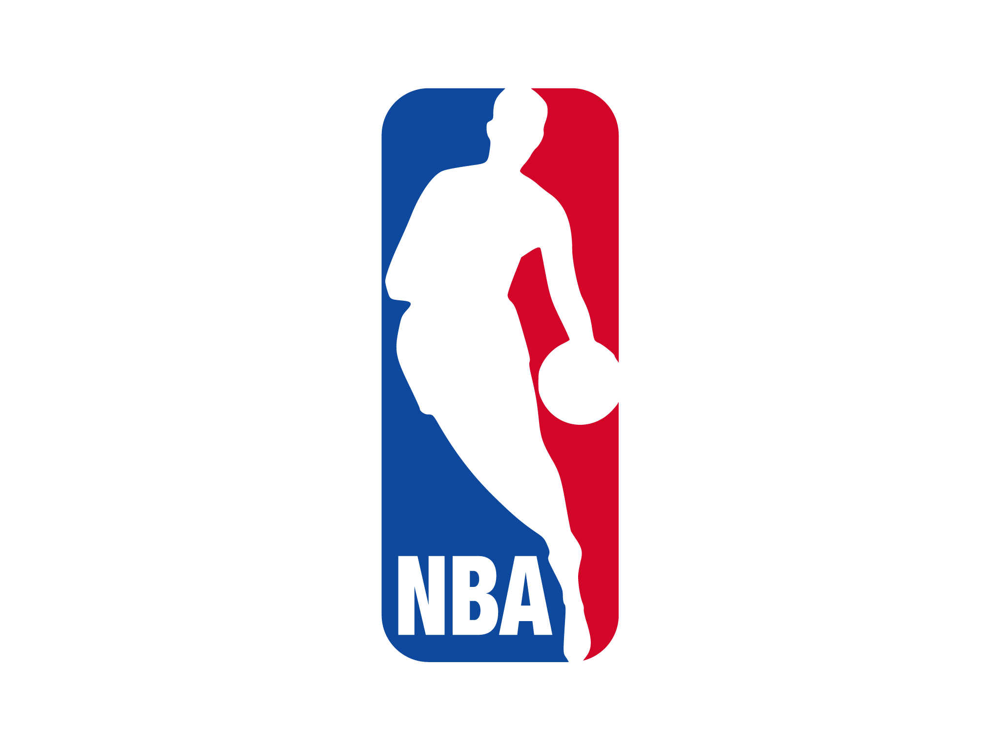

Sobre o Time
Chicago Bulls: Uma Lenda da NBA
Fundado em 1966, o Chicago Bulls é mais do que apenas um time de basquete; é um ícone cultural que transcende o esporte. Com sede na vibrante cidade de Chicago, Illinois, os Bulls têm uma história rica marcada por triunfo, talento e determinação.
A era dourada dos Bulls veio nos anos 90, quando a lenda Michael Jordan liderou o time a seis campeonatos da NBA, criando um legado de excelência e paixão. A equipe se destacou não apenas por suas vitórias, mas também pelo estilo de jogo revolucionário e pela habilidade incomparável de seus jogadores, que capturaram a imaginação de fãs em todo o mundo.
Hoje, os Bulls continuam a ser uma força formidável na liga, construindo sobre o legado de seus antecessores com uma nova geração de talentos. A cada jogo, eles trazem para a quadra o mesmo espírito de luta e a mesma vontade de vencer que os tornaram lendários.
No United Center, conhecido como o "Madhouse on Madison", a energia e a paixão dos fãs dos Bulls são palpáveis. É aqui que memórias são feitas, onde a história continua a ser escrita, e onde o espírito dos Bulls vive - forte e inabalável.
Junte-se a nós e faça parte da história contínua dos Chicago Bulls.

- 